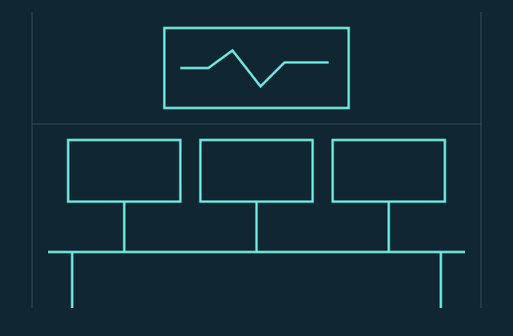

01 / BE SPECIFIC
Show the measure.
A useful chart names its unit, its time window and what it leaves out. We would rather be precise than sound impressive.
06 / THE PEOPLE BEHIND THE SIGNAL
Meet the Cary team making observability calmer, clearer and useful to the people responding.

A SMALL ENGINEERING TEAM
01 / BE SPECIFIC
A useful chart names its unit, its time window and what it leaves out. We would rather be precise than sound impressive.
02 / KEEP CONTEXT
An investigation should help the next person. Saved views, written budgets and short incident notes turn a discovery into a shared habit.
03 / CONTROL COST
More data is not automatically more understanding. Decide what to keep, remove sensitive fields and give retention a purpose.
BASED IN CARY
Our engineering office is on Academy Street in downtown Cary. We work Monday–Friday, 9 a.m.–5:30 p.m. Eastern time, with planned onboarding calls by appointment. Please schedule a time before visiting; the room is not a public support desk.
Meet the engineering team